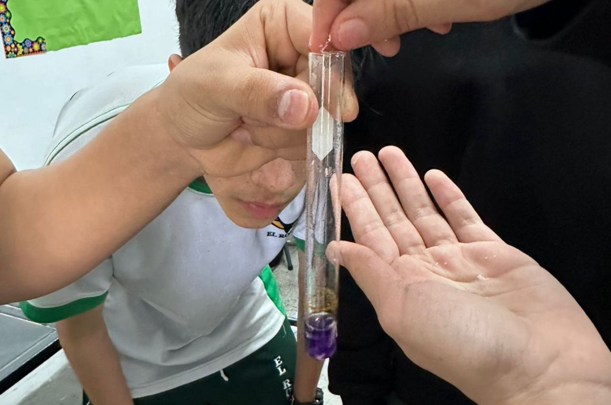

| Start | Introduction and Hypothesis | Materials and Procedure | Results and Conclusions |
|---|
-Red cabbage juice
-Clear plastic cups or test tubes
-Small amounts of household substances:
-Lemon
-Orange juice
-Milk
-Chlorine
-Soap
-Lipton
-Yogurt
-Bicarbonate
-Coke (soda)
-Alcohol
-Pineapple juice
-Extra: (pee)
-Dropper
-PH Observation Sheet (to record results)
- Pour a small amount of cabbage juice into each cup or test tube.
-Carefully add a small amount of a test substance to the juice.
-Gently stir and observe the color change
-Record the color and decide if the substance is an acid, base, or neutral.
-Repeat with other substances.
